See my best oil, acryclic, and watercolor paintings!
 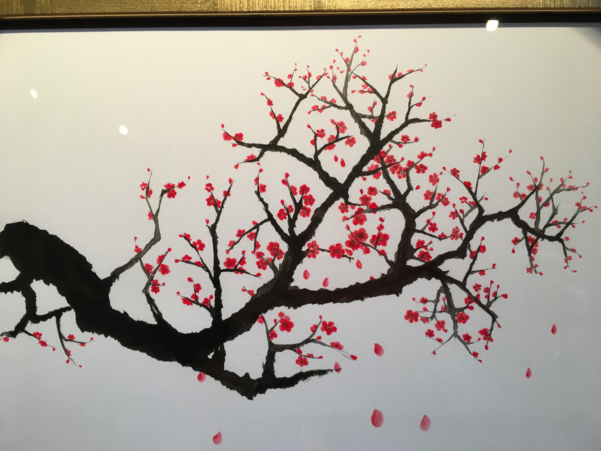
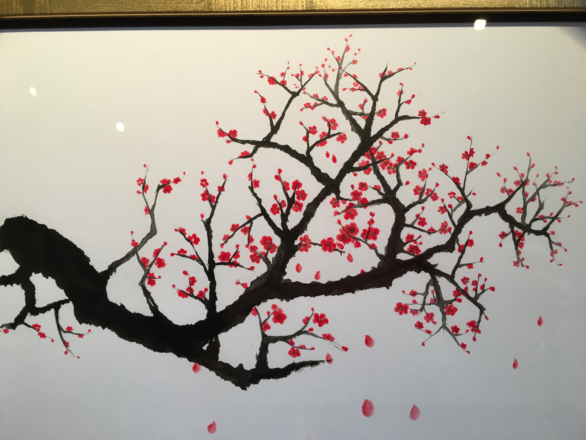
See portraits and landscapes drawn using charcoal, graphite, ink, and sometimes a combination!
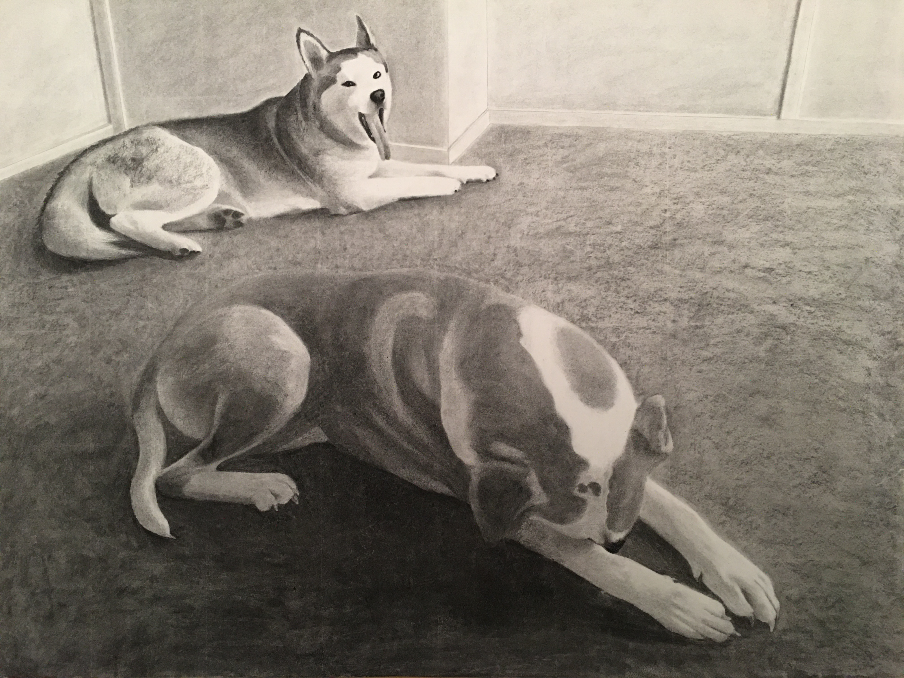 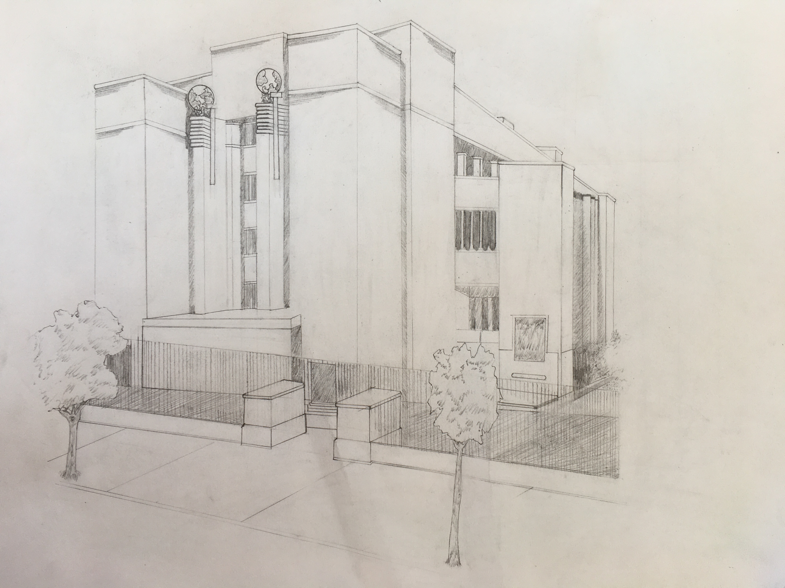 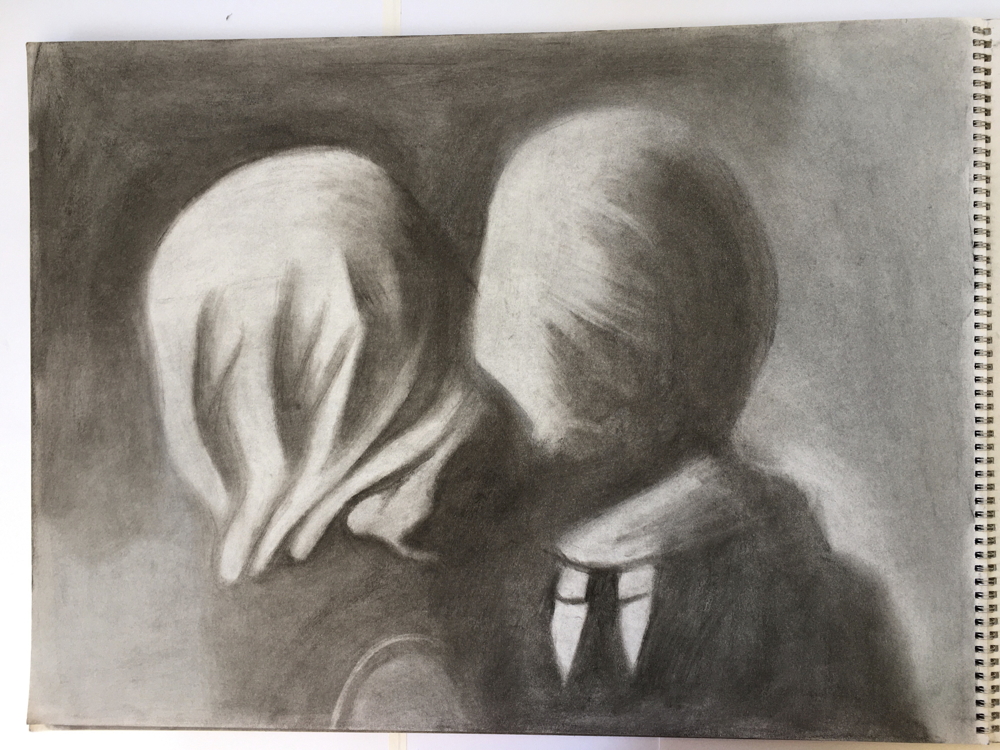Crafts include unique lampshades, detailed cross-stich, felt-based landscapes, and more! You can even see an awning made out of soda cans.
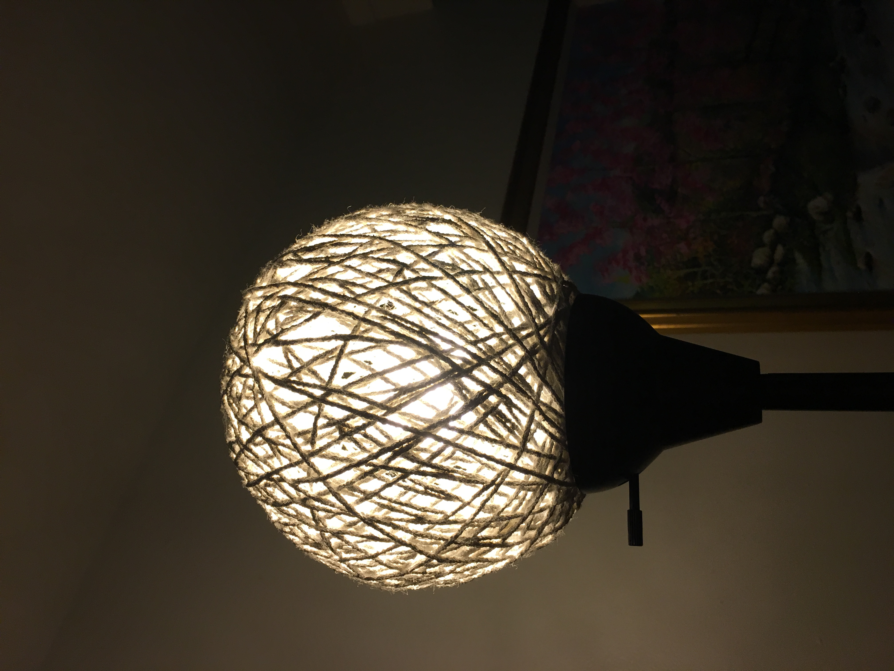 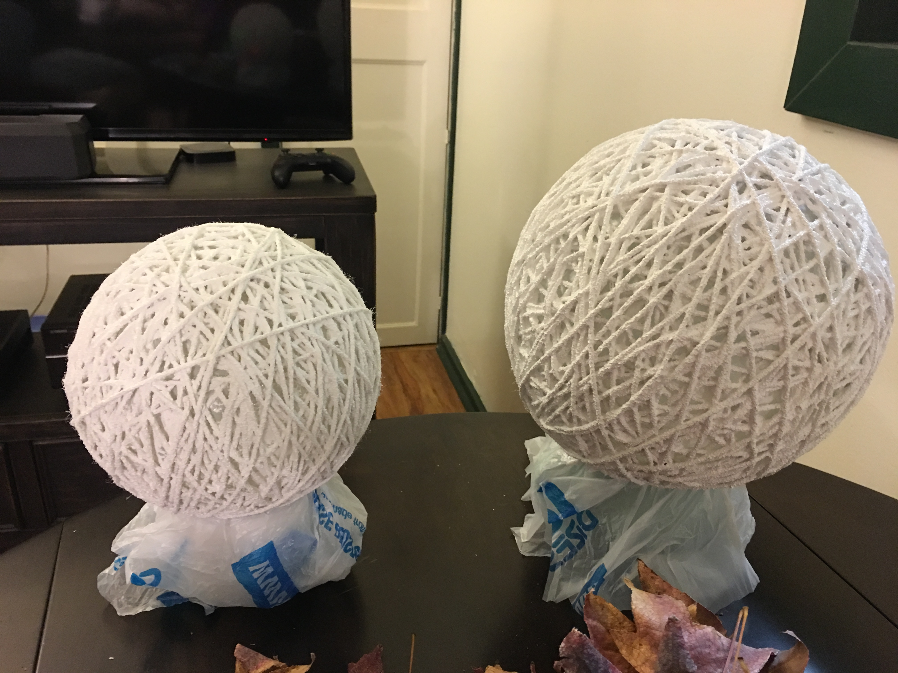 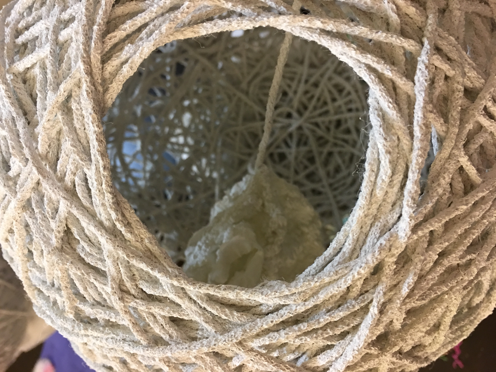My birth name is Quanyun Xu, but my friends and family call me Xiaoyun, which means little cloud. I am an artist, and I believe that art is in everything we do, whether we realize it or not.

I was born in Ankang, a small town in China, as a second child while China was observing its one-child policy.
To avoid getting in trouble with the government, I grew up in the countryside with my grandparents. I did not go to school for the first time until I was 10 years old. We had very little technology — no phones, no television, no internet — so most of my childhood was spent outside having fun with my cousins and with my grandparents and me taking care of each other. My mom has eight siblings, so I have countless cousins.
The postsecondary education system in China is very different from that of the Western world. I always dreamed of going to art school, but my parents wanted me to be a teacher. I passed all of the tests required to go to the best art schools in China, but I did not do well on my tests to become a teacher, and at my parents' behest, I ended up studying accounting.
My parents wanted me to stay closer to home, but I decided to attend a university in Qingdao — a city with some German influence that produces a famous beer called Tsingtao. My decision to study in Qingdao and the fact that Tsingtao is produced in Qingdao are completely unrelated. I earned my Associate's degree in accounting and while working towards my Bachelor's degree, I met my now husband, a French teacher from the United States.
I soon moved to the US with my husband, where we live in California with our two dogs (Mozzie and Summer) and sulcata tortoise (Momo). I am currently pursuing an Associate's degree in Studio Arts at Berkeley City College while working toward my dream of attending art school and becoming a professional artist.
My husband and I love traveling. See pictures from our travels in China and across the United States. We dream of someday traveling together in Europe!
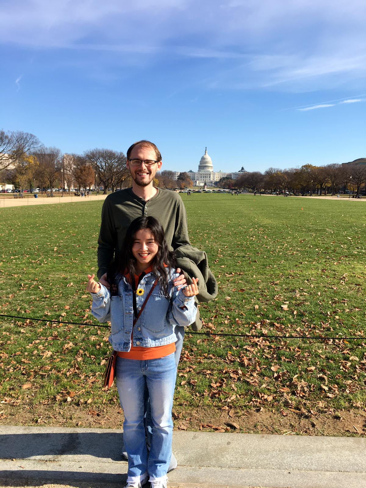We have two dogs, Summer and Mozzie, and a sulcata tortoise named Momo.
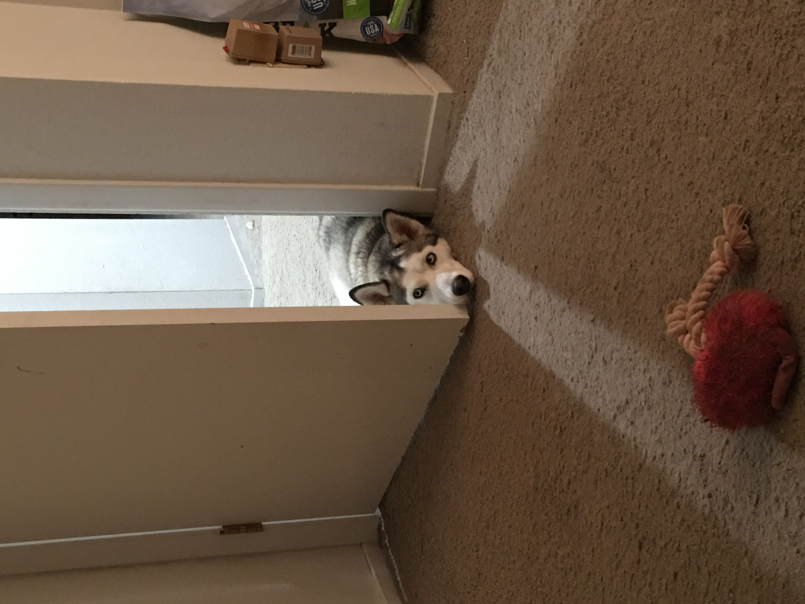 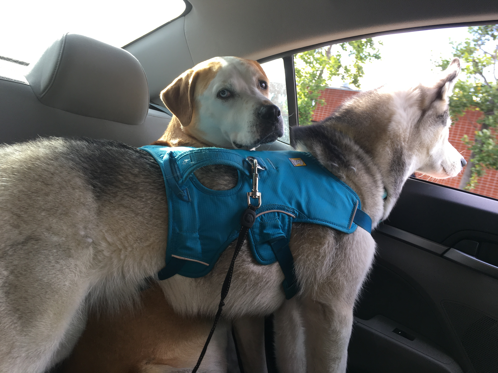 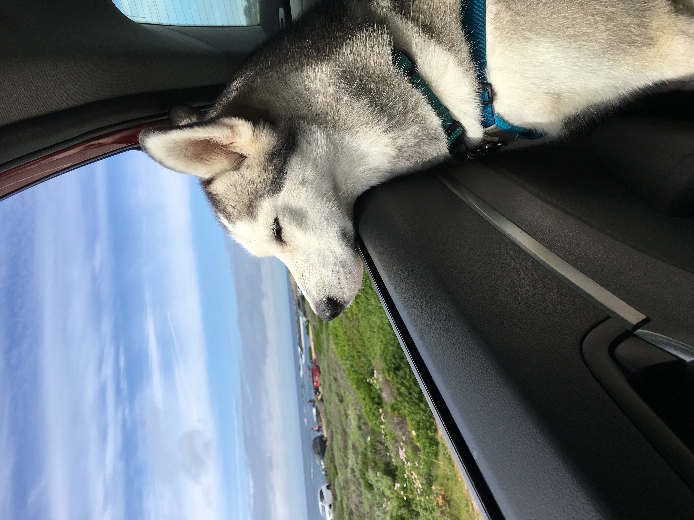To contact me, please send an email to hi@quanyunxu.com.